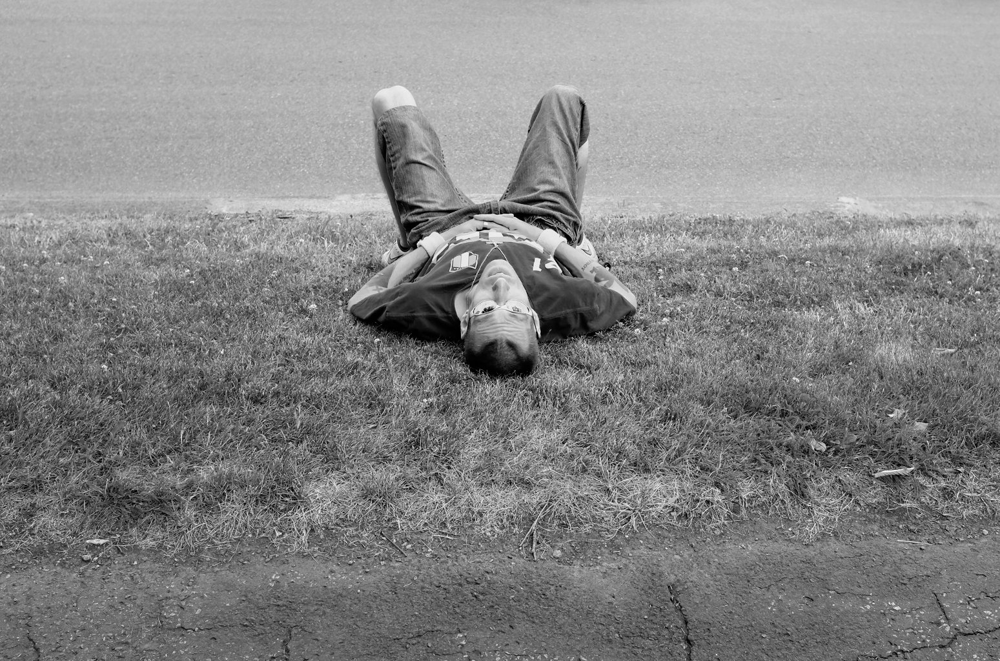
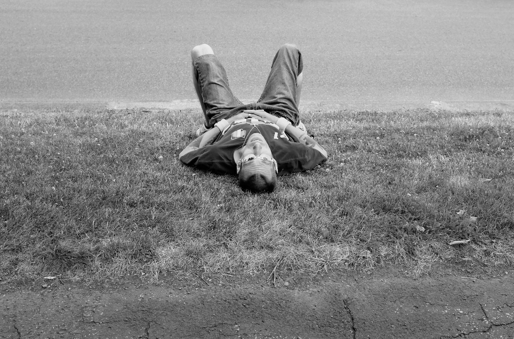
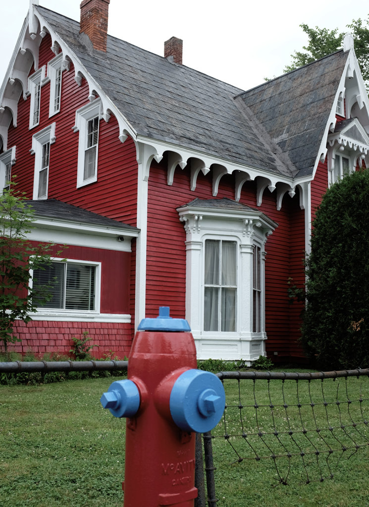
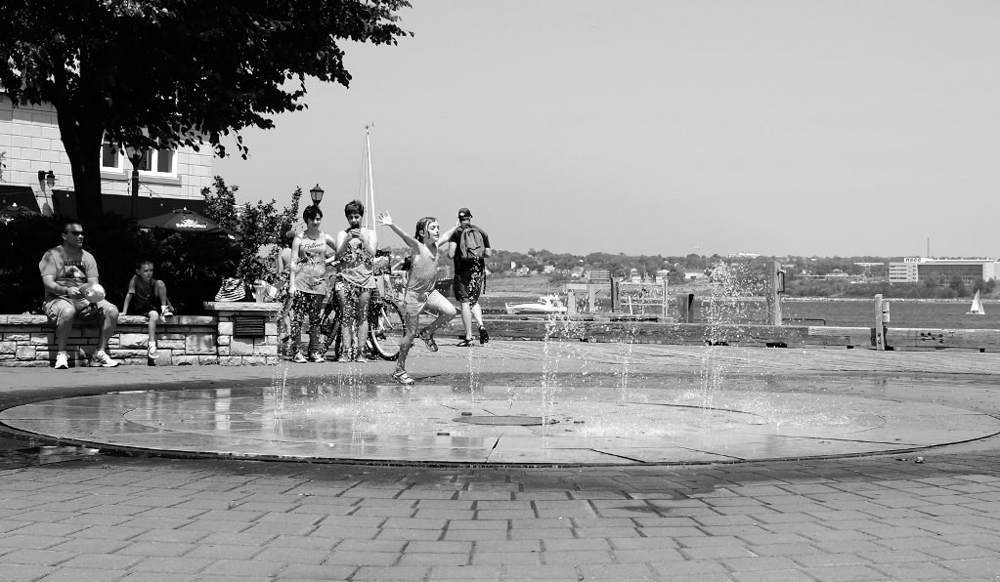
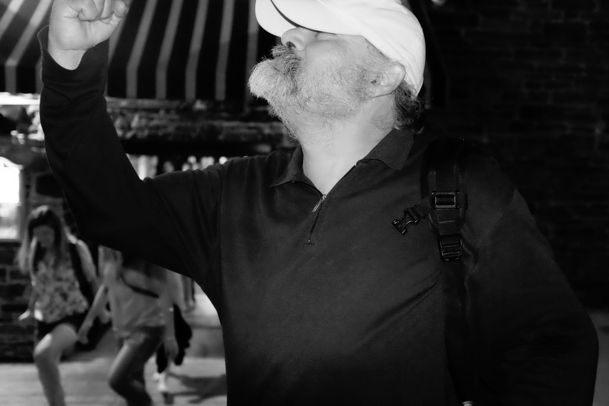
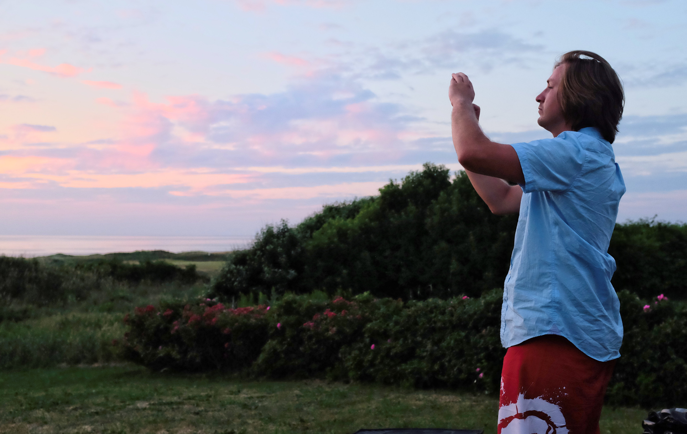
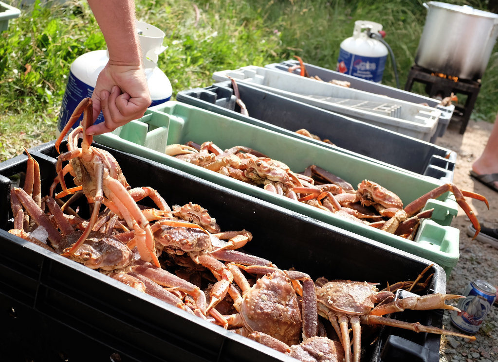
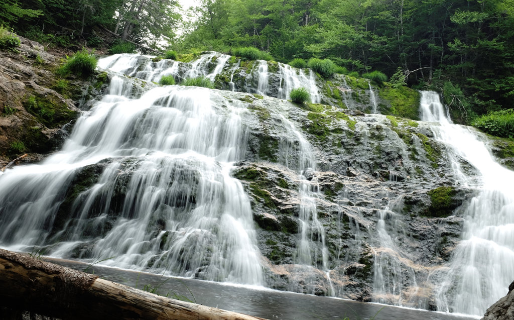
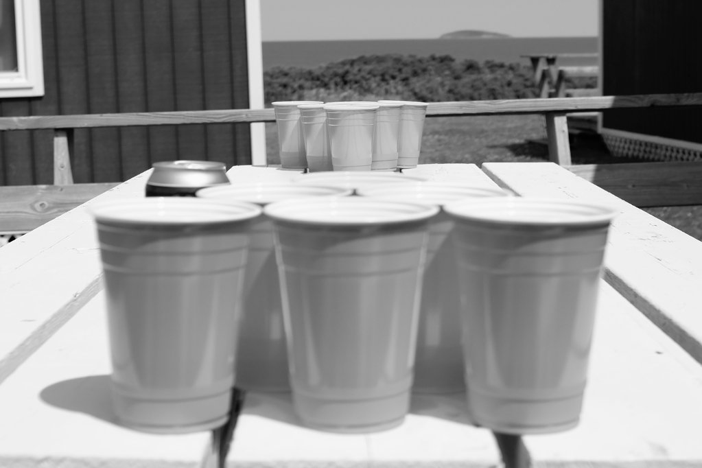
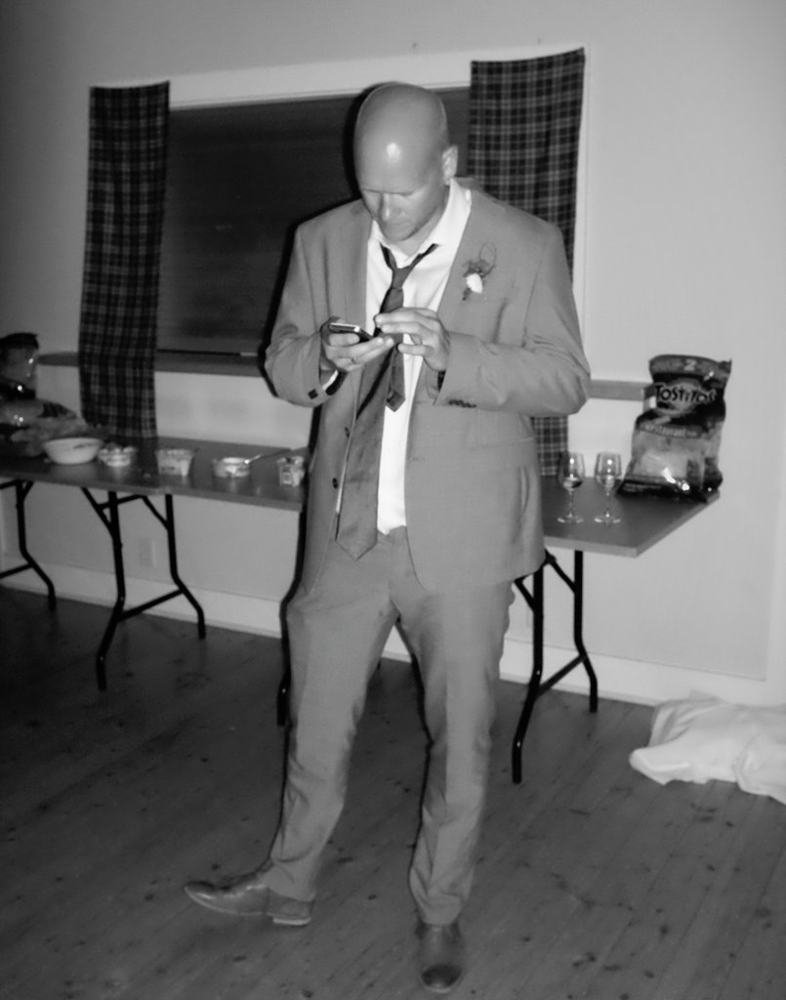

Day 79 - 2 of 5

Taken July 25th, 2014 in Quebec City, Canada
Fuji X100s 23mm 1/320 @ f/5.6 ISO 320
Taken July 25th, 2014 in Quebec City, Canada Fuji X100s 23mm 1/320 @ f/5.6 ISO 320...
Photo-a-day by Matt Thompson started May 8th, 2014.

Taken July 25th, 2014 in Quebec City, Canada
Fuji X100s 23mm 1/320 @ f/5.6 ISO 320
Taken July 25th, 2014 in Quebec City, Canada
Fuji X100s 23mm 1/320 @ f/5.6 ISO 320

Taken July 24th, 2014 in Fredericton, Canada
Fuji X100s 23mm 1/250 @ f/5.6 ISO 200

Taken July 23rd, 2014 in Halifax, Canada
Fuji X100s 23mm 1/2000 @ f/4.0 ISO 200
Taken July 23rd, 2014 in Halifax, Canada
Fuji X100s 23mm 1/60 @ f/2.7 ISO 6400

Taken July 22nd, 2014 in Halifax, Canada
Fuji X100s 23mm 1/60 @ f/2.7 ISO 6400

Taken July 21st, 2014 in Inverness, Canada
Fuji X100s 23mm 1/640 @ f/4.0 ISO 3200

Taken July 21st, 2014 in Inverness, Canada
Fuji X100s 23mm 1/1000 @ f/4.0 ISO 320

Taken July 21st, 2014 in Inverness, Canada
Fuji X100s 23mm 1/2 @ f/14.3 ISO 100

Taken July 20th, 2014 in Inverness, Canada
Fuji X100s 23mm 1/2000 @ f/4.0 ISO 200

Taken July 20th, 2014 in Inverness, Canada
Fuji X100s 23mm 1/250 @ f/5.6 ISO 6400
Taken July 19th, 2014 in Inverness, Canada
Fuji X100s 23mm 1/250 @ f/2.7 ISO 6400